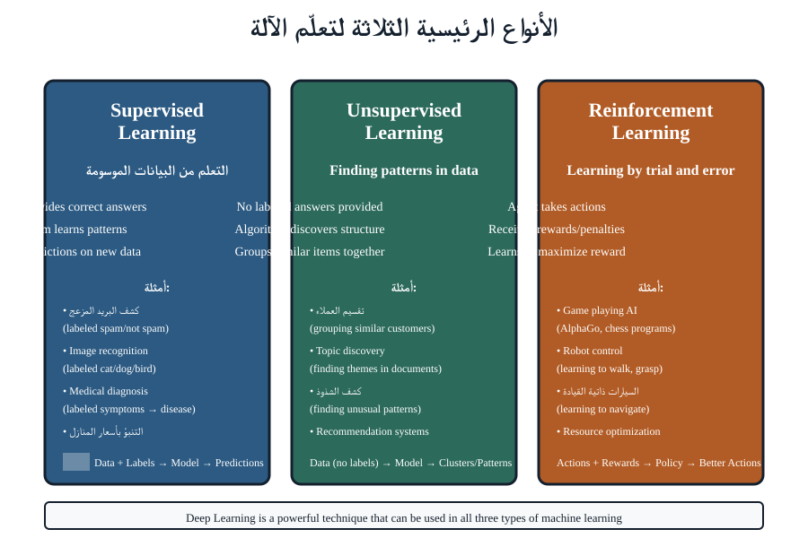
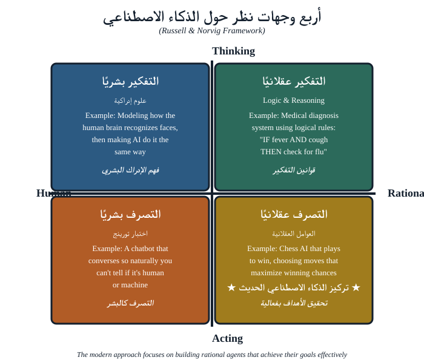

ما سنغطيه
- ترحيب ومشكلة الحجم — لماذا يحتاج مساق في التحليل الجنائي إلى الذكاء الاصطناعي أصلاً
- ثلاث عبارات، ثلاث مهام — مخطط فِنّ، إضافةً إلى النشاط 1 التمهيدي
- علم البيانات — الحقل الذي يدرس البيانات؛ ودورة العمل
- الذكاء الاصطناعي بوصفه صندوق أدوات — تاريخ موجز، وعائلات الأدوات الست
- التحليل الجنائي الرقمي — البيانات بمستوى الأدلة وأنواع الأدلة (النشاط 2)
- كيف تتكامل المجالات الثلاثة — مثال الهاتف الواحد المضبوط
- الخلاصة والجسر إلى الجزء الثاني
ثلاث عبارات، ثلاث مهام
من المغري أن نعامل «AI» و«علم البيانات» و«التحليل الجنائي الرقمي» على أنها مصطلحات رنّانة قابلة للتبادل. لكنها ليست كذلك. فكلٌّ منها يسمّي مهمة مختلفة. والإبقاء عليها منفصلة هو ما يتيح لك أن تقول بوضوح ماذا تحلّل، وبأيّ تقنية، ولأيّ غاية. اضبط العبارات الآن وكل جزء لاحق يصير أيسر؛ وامزجها يختلط عليك الأمر فتحسب الأداة غاية.
النشاط 1 — سمِّ المهمة (في ثنائيات)
إليك خمس عبارات. لكلٍّ منها، قرّر هل هي بالأساس مهمة علم بيانات أو ذكاء اصطناعي أو تحليل جنائي رقمي — وبيّن السبب في جملة واحدة:
- «هل مجموعة البيانات هذه مكتملة، أم أن الطوابع الزمنية مفقودة لليلة الحادثة؟»
- «رتّب هذه الـ40,000 صورة بحيث يرى المحلل أكثر التطابقات احتمالاً أولاً.»
- «احسب التجزئة (hash) لصورة القرص حتى نثبت أنها لم تُعدَّل بعد الضبط.»
- «جمّع رسائل المحادثة هذه في موضوعات دون وسمها مسبقاً.»
- «ما الذي يمكننا أن نستنتجه بأمانة من عيّنة قوامها 12 سجلّاً فقط؟»
توقّع خلافاً حول عبارة أو عبارتين منها — وهذا هو المقصود. فكثير من المهام الحقيقية يقع في التقاطع.
علم البيانات: الحقل الذي يدرس البيانات
علم البيانات هو الاختصاص المعنيّ باستخلاص معرفة موثوقة من البيانات. يسأل من أين تأتي البيانات، وكيف تُبنى، وما مدى نظافتها واكتمالها، وما الذي يمكن أن يُستنتَج منها بأمانة. والأهم أن علم البيانات ليس خوارزمية واحدة — بل هو طريقة في العمل. والدورة، في خمس حركات:
- صُغ السؤال بدقة كافية بحيث تكون الإجابة قابلة للتمييز.
- اجمع البيانات التي تتعلق به فعلاً — ودوّن ما هو مفقود.
- افحص ونظّف: تحقق من النطاقات والتكرارات والفجوات والأخطاء الواضحة.
- نمذِج أو لخّص: عُدّ، أو قارِن، أو ارتبط، أو لائم نموذجاً.
- اعرض النتيجة مقترنةً بدرجة عدم اليقين فيها.
بالنسبة إلى المحقق الجنائي، فإن عقلية علم البيانات مألوفة لديه أصلاً تحت اسم آخر. فأسئلة «من أين جاء هذا؟ هل هو مكتمل؟ هل يمكن أن يكون قد عُدِّل؟ ما الذي يمكنني أن أستنتجه بمسؤولية؟» هي بالضبط الأسئلة التي يُضفي عليها علم البيانات طابعاً منهجياً. الفارق في المفردات، لا في الحدس.
وأكثر إخفاق شائع في الممارسة هو القفز مباشرةً من «الجمع» إلى «النمذجة» — أي تشغيل تحليل ذكي على بيانات لم يفحصها أحد. عمود طابع زمني سُجّل بصمت في منطقة زمنية خاطئة، أو سجلّ دار وفقد يوماً، أو عملية إزالة تكرار دمجت بهدوء مشتبهين اثنين: كلٌّ منها يُنتج إجابة واثقة وخاطئة. وعلى امتداد المساق، تبقى أسئلة علم البيانات قائمةً تحت كل شيء، لأن نتيجة ذكية للذكاء الاصطناعي على بيانات غير جديرة بالثقة أسوأ من غياب أيّ نتيجة — فهي مقنعة وخاطئة.
للنقاش
أين ينتهي «علم البيانات» وأين يبدأ «الذكاء الاصطناعي»؟ هل حساب متوسط ذكاء اصطناعي؟ هل ترتيب 40,000 صورة بحسب التشابه ذكاء اصطناعي؟ ادفع على الحدّ — ستجده ضبابياً، وأن التمييز المفيد هو المهمة (دراسة البيانات) مقابل الأداة (خوارزمية تعالجها).
الذكاء الاصطناعي: الخوارزميات التي تعالج البيانات
الذكاء الاصطناعي هو عائلة الخوارزميات والمقاربات التي تتيح للآلة أداء مهام كنا لنصفها بالذكية لو قام بها إنسان — من بحث واستدلال واتخاذ قرارات والتعرف على الأنماط وتوليد اللغة. وأهم تصحيح يقدّمه هذا المساق على الإطلاق هو هذا: الذكاء الاصطناعي أوسع بكثير من تعلّم الآلة، وأوسع بكثير من روبوتات المحادثة.
مفهوم خاطئ شائع. صار كثير من الناس حين يسمعون «AI» يتخيلون نموذجاً لغوياً كبيراً مثل ChatGPT. لكن هذا ليس سوى ركن من أركان حقل فرعي واحد. فحلّالات القيود، والتحسين، ومحركات البحث، والاستدلال القائم على المعرفة، ونماذج الموضوعات كلها ذكاء اصطناعي أيضاً — بل، كما يجادل الجزء الرابع، كثيراً ما تكون هي الأدوات الأفضل للعمل الجنائي، لأنه يمكنك تشغيلها داخلياً وتفسير كيفية وصولها إلى الإجابة بالضبط.
سنتعامل مع الذكاء الاصطناعي بوصفه صندوق أدوات. ومن المفيد أن نتعرف على العائلات الست الآن، دفعةً واحدة، حتى يجد بقية المساق معالق يعلّق عليها التفاصيل. ستبنيها في الجزء الرابع وتسلّمها إلى وكيل في الجزء الخامس:
| العائلة | السؤال الذي تجيب عنه | مذاق جنائي |
|---|---|---|
| البحث | «اعثر عليه بسرعة في فضاء هائل» | الاستعلام عبر تيرابايتات من الآثار |
| التحسين | «اعثر على الخيار الأفضل تحت المفاضلات» | ما الذي يُفحَص أولاً |
| إرضاء القيود | «اعثر على تخصيص يلائم كل القواعد» | اتساق الخط الزمني / الدفع بالغياب |
| المعرفة والاستدلال | «طبّق قواعد خبير صريحة» | استدلال قابل للتدقيق |
| تعلّم الآلة | «تعلّم نمطاً من الأمثلة» | تصنيف الملفات، ووسم الشذوذات |
| اللغة والموضوعات | «افهم كومة من النصوص» | فرز الرسائل المضبوطة |
واختيار الأداة الصحيحة لمهمة بمستوى الأدلة — والقدرة على الدفاع عن ذلك الاختيار — مهارة يبنيها هذا المساق عن قصد. لاحظ أن روبوت المحادثة ليس سوى تعبير واحد عن العائلة الأخيرة؛ فهو ليس صندوق الأدوات كله، وهو لكثير من العمل الجنائي الأداة الخاطئة.

أربع زوايا نظر إلى ما يعنيه «الذكاء»
يتجادل الناس حول الذكاء الاصطناعي جزئياً لأنهم يستخدمون بهدوء تعريفات مختلفة لـ«الذكاء». والتأطير الكلاسيكي يقدّم أربعاً، على محورين — التفكير مقابل الفعل، وكالإنسان مقابل بعقلانية:

الفعل كالإنسان
التصرف بحيث لا يستطيع المرء التمييز بين الآلة والإنسان — اختبار Turing. روبوت محادثة «يبدو صحيحاً» يعيش هنا. مُقنِع، لكن ليس صحيحاً بالضرورة.
التفكير كالإنسان
نمذجة كيفية استدلال الناس فعلاً — العلم المعرفي. مفيد لتفسير السلوك، أقل فائدةً للإنتاجية الخام.
التفكير بعقلانية
اتّباع قوانين المنطق للوصول إلى استنتاجات سليمة — جذور الاستدلال القائم على المعرفة وحلّ القيود في الجزء الرابع.
الفعل بعقلانية
اتخاذ الفعل الذي يحقق الهدف على أفضل وجه في ضوء الأدلة — الوكيل العقلاني، العدسة التي يقوم عليها الجزء الخامس.
وخط الصدع الذي يهم التحليل الجنائي يمتد بين الفعل كالإنسان والربعين العقلانيين. فنظام يبدو مقنعاً فحسب (الفعل كالإنسان) هو بالضبط الشيء الخاطئ الذي يُوضَع أمام محكمة؛ ونظام يصل إلى استنتاج سليم وقابل للتفسير (التفكير أو الفعل بعقلانية) هو ما يحتاجه العمل بالأدلة. وحين تسمع «قال الذكاء الاصطناعي ذلك»، فليكن سؤالك الأول: أيّ نوع من الذكاء — مُقنِع، أم سليم؟
للنقاش
يقع النموذج اللغوي الكبير في صميم ربع «الفعل كالإنسان» — فهو محسَّن لإنتاج نص سلس ومعقول. لأيّ المهام الجنائية يكون ذلك مفيداً بحق، ولأيّها يكون عبئاً؟ حاول أن تسمّي مثالاً واحداً لكلٍّ منهما.
تاريخ موجز، حتى يكفّ «الذكاء الاصطناعي» عن التحرّك
جزء من سبب شعورنا بأن «الذكاء الاصطناعي» زلِق هو أن التسمية تنتقل باستمرار إلى أحدث ما يظهر. وجولة سريعة في الحِقب تُظهر أن صندوق الأدوات جُمِّع على مدى عقود — فروبوتات المحادثة اليوم هي الطبقة الأحدث، لا الأساس:

- الخمسينيات — السؤال. يسأل Turing هل يمكن للآلات أن تفكّر؛ ويُسمَّى الحقل.
- الستينيات–السبعينيات — الذكاء الاصطناعي الرمزي. البحث والمنطق: حلّ الألغاز، وإثبات المبرهنات. (جذور البحث وحلّ القيود في الجزء الرابع.)
- الثمانينيات — الأنظمة الخبيرة. قواعد مكتوبة يدوياً تُرمِّز معرفة المتخصصين. (جذور الاستدلال القائم على المعرفة.)
- التسعينيات–العقد الأول. البيانات والحوسبة الأرخص تجعل تعلّم الآلة عملياً.
- العقد الثاني — التعلّم العميق. الشبكات العصبية تحلّ الرؤية والكلام.
- العقد الثالث — الذكاء الاصطناعي التوليدي والوكلاء. النماذج اللغوية الكبيرة، وأنظمة تربط الأدوات معاً لتفعل. (الجزء الخامس.)
والمغزى لجمهور التحليل الجنائي ليس التواريخ بل الشكل: كل حقبة خلّفت وراءها أداة قابلة للاستخدام، والأدوات الأقدم القابلة للتفسير لم تكفّ يوماً عن كونها الإجابة الصحيحة للعمل بالأدلة.
التحليل الجنائي الرقمي: بيانات بمستوى الأدلة
التحليل الجنائي الرقمي هو ممارسة تحديد البيانات الرقمية وحفظها وتحليلها وعرضها بحيث يمكن الاعتماد عليها — غالباً في إجراء قانوني. ولأغراضنا، فإن السمة المميِّزة هي نوع البيانات المعنية والقيود التي تحملها. فالبيانات الجنائية ليست مجرد «بيانات»؛ بل هي بيانات يجب أن تظل جديرة بالثقة بما يكفي للتصرف بناءً عليها، وأحياناً لعرضها أمام محكمة.
البيانات الاعتيادية
تُجمَع للملاءمة. ويمكن نسخها وتنظيفها وإعادة تشكيلها والتخلص منها بحرية. ولا يسأل أحد عمّن لمسها أو عمّا إذا كانت قد عُدِّلت.
البيانات الجنائية (بمستوى الأدلة)
يجب الحصول عليها بشكل مشروع، وحفظها دون تعديل، والتعامل معها عبر سلسلة حيازة موثّقة، وإثبات مقبوليتها. وكل خطوة يجب أن تكون قابلة لإعادة الإنتاج وقابلة للدفاع عنها.
هذه القيود — الحصول المشروع، والسلامة، والمقبولية — هي العمود الفقري للجزأين الثاني والثالث. وهي تحدد أيضاً أيّ أدوات الذكاء الاصطناعي مقبولة: فتقنية لا يمكنك تفسيرها، أو تتطلب إرسال الدليل إلى خدمة خارجية، قد تكون غير قابلة للاستخدام مهما بلغت دقتها. وثمة شعار مفيد للمساق كله: في التحليل الجنائي، كيف حصلت على الإجابة جزء من الإجابة.
تصنيف عملي للأدلة الرقمية
«الأدلة الرقمية» خيمة واسعة. وفرزها إلى بضع عائلات الآن سيجعل نقاش الجزء الثاني حول أين تعيش البيانات، ونقاش الجزء الثالث حول ما هو مقبول، أكثر حدّة:
- المحتوى المخزَّن — الملفات والصور والمستندات وقواعد البيانات وبيانات التطبيقات. ما يتخيله الناس عادةً بوصفه «أدلة».
- الاتصالات — الرسائل والبريد الإلكتروني وسجلات المكالمات ووسائل التواصل الاجتماعي. غالباً قلب القضية، وتحفظها عادةً جهة خارجية.
- البيانات الوصفية — الطوابع الزمنية والموقع الجغرافي ومعرّفات الأجهزة وسجلات نظام الملفات. صغيرة، وسهلة الإغفال، وحاسمة كثيراً (يُظهر الجزء الثالث أن البيانات الوصفية وحدها قادرة على إعادة تحديد هوية الأشخاص).
- آثار النظام والسجلات — سجلات الأحداث وتاريخ المتصفح والذواكر المؤقتة والسجل (registry) والمساحة غير المخصصة وفُتات الملفات. آثار النشاط، بما في ذلك نشاط حاول أحدهم حذفه.
- الحالة المتطايرة — العمليات الجارية، والاتصالات المفتوحة، والمفاتيح المفكوكة المحفوظة في الذاكرة فقط. تزول لحظة قطع الطاقة (ترتيب التطاير في الجزء الثاني).
النشاط 2 — اعتيادية أم بمستوى الأدلة؟
خذ هذه القائمة وقسّمها بطريقتين: أولاً إلى عائلات الأدلة الخمس أعلاه، ثم علّم أيّ العناصر سيحتاج إلى معالجة بمستوى الأدلة في تحقيق:
لقطة شاشة مُلصَقة في تقرير · صور «محذوفة» من هاتف لا تزال في المساحة غير المخصصة · ملف CSV تسويقي نُزِّل من موقع عام · ذاكرة الوصول العشوائي (RAM) للحاسوب المحمول للمشتبه به لحظة الضبط · سجل اتصال لموجّه واي-فاي · ملخّص روبوت محادثة لتصدير محادثة.
العنصر الأخير فخّ يستحق التوقف عنده: فإنتاجه ربما يكون قد كسر سلسلة الحيازة. احتفظ بهذه الفكرة — فالجزء الثالث يعود إليها.
كيف تتكامل المجالات الثلاثة
اقرأ التعريفات الثلاثة بوصفها جملة واحدة: التحليل الجنائي الرقمي يوفّر البيانات والقواعد التي يجب أن تخضع لها؛ وعلم البيانات يوفّر الطريقة المنضبطة في التفكير حول تلك البيانات؛ والذكاء الاصطناعي يوفّر الخوارزميات التي تنجز العبء الثقيل بحجم لا يستطيع أيّ إنسان مجاراته. هذا المساق هو التقاطع — استخدام تقنيات الذكاء الاصطناعي، بعقلية علم البيانات، على البيانات الجنائية بمستوى الأدلة.
هاتف واحد مضبوط. يقول التحليل الجنائي الرقمي: انسخه صورةً دون تغيير بايت واحد، ودوّن من لمسه، والتزم حدود مذكرة التفتيش. ويسأل علم البيانات: أيٌّ من الـ100,000 رسالة يقع أصلاً ضمن النطاق، وما المفقود، وما الذي يمكننا الادعاء به بأمانة؟ ويقوم الذكاء الاصطناعي بالعبء الثقيل: يفهرس البحث كل شيء، ويجمّع نموذج موضوعات الخيوط، ويوسم مصنِّف الصور، ويتحقق حلّال خطّ زمني من الدفع بالغياب. ثلاث مهام، جهاز واحد.
لاحظ أن الترتيب مهم. فالتحليل الجنائي يضع القيود أولاً؛ وعلم البيانات يقرر ما يستحق السؤال؛ وعندها فقط يعمل الذكاء الاصطناعي. والفرق التي تعكس هذا — «لنشغّل النموذج ونرى» — تنزع إلى إنتاج مخرجات مبهرة لا تصمد أمام سؤال واحد عن مصدرها.
جرّبه: إن العرض التوضيحي للتحقيق ذي الخطوات الست يسير بقضية واحدة من التحديد إلى العرض أمام المحكمة. لاحظ كيف تدور كل خطوة حول الحفاظ على الثقة في البيانات — القيد الذي سيحكم كل خيار للذكاء الاصطناعي نتخذه لاحقاً.
لماذا الذكاء الاصطناعي، ولماذا الآن
السبب في وجود هذا المساق هو الحجم. فهاتف واحد مضبوط قد يحوي مئة ألف رسالة وصورة ونقطة موقع؛ وقضية مؤسسية قد تمتد على تيرابايتات من السجلات عبر عشرات الأنظمة. لا محقق يقرأ كل ذلك. والذكاء الاصطناعي هو ما يجعل كومة القش قابلة للبحث: ترتيب ما يُنظَر إليه أولاً، وتجميع الآثار المترابطة، ووسم الشذوذات، وإبراز القلة من العناصر التي تهمّ.
لكن للحجم حدّين، وهذا هو التوتر الذي بُني حوله المساق كله. فالتقنيات نفسها التي تعثر على الإبرة قد تعيد أيضاً تعريف هوية أشخاص «مجهولين»، والخدمات السحابية المريحة التي تتيحها هي ذاتها جامعة للبيانات. لذلك يقرن المساق كل قدرة بقيدها: ما تستطيع فعله، إلى جانب ما يجوز لك فعله. هذا الاقتران هو الخيط الناظم من هنا حتى الجزء الخامس — قدرة على صفحة، وقيد على الصفحة المقابلة، في كل مرة.
للنقاش
فكّر في مهمة واحدة في عملك أنت تغرق في الحجم. أيّ من عائلات الأدوات الست قد تساعد؟ وما القيد المقابل — الخصوصية أو المقبولية أو سلسلة الحيازة — الذي سيتعين عليك احترامه أثناء استخدامها؟
خلاصة ومزيد من التمرين
- علم البيانات يدرس البيانات؛ والذكاء الاصطناعي هو الخوارزميات التي تعالجها؛ والتحليل الجنائي الرقمي هو البيانات بمستوى الأدلة التي نحللها.
- الذكاء الاصطناعي صندوق أدوات من ست عائلات، أوسع بكثير من تعلّم الآلة أو روبوتات المحادثة — جُمِّع على مدى عقود.
- تحمل البيانات الجنائية قيوداً — الحصول المشروع، والسلامة، والمقبولية — تحدد أيّ الأدوات مقبولة. كيف حصلت على الإجابة جزء من الإجابة.
- تنقسم الأدلة الرقمية إلى محتوى مخزَّن، واتصالات، وبيانات وصفية، وآثار نظام/سجلات، وحالة متطايرة.
- الذكاء الاصطناعي ضروري بسبب الحجم؛ لكن كل قدرة تأتي مقترنةً بقيد.
مزيد من التمرين قبل الجزء الثاني: اختر قضية حديثة (حقيقية أو افتراضية) وعدّد، لقطعة دليل واحدة، أيٌّ من عائلات الأدلة الخمس تنتمي إليها وأيّ القيود تنطبق عليها. ستوسّع هذا بالضبط في الجزء الثاني بأن تسأل أين يعيش ذلك الدليل فيزيائياً.